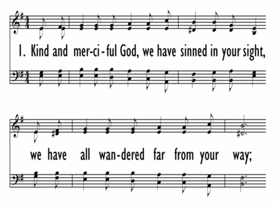

|
|
【慈悲仁愛上帝】 |
|
1 Kind and merciful God, we have sinned in your sight, 2 Kind and merciful God, we've neglected your Word 3 Kind and merciful God, we have broken your laws 4 Kind and merciful God, in Christ's death on the cross 5 Kind and merciful God, bid us lift up our heads
|
慈悲仁愛上帝，你悉察一切事， |
|
https://digitalsongsandhymns.com/songs/3521
 |
|
|
|
|

慈悲仁愛上帝 Kind and Merciful God - 第六屆聖詩頌唱會 https://youtu.be/59w6SXTrTyQ - Kind and Merciful
God
https://youtu.be/slFCyqNNjKg -
Kind and Merciful God performed by CCC Choir, Orchestra and Jubilation Bell
Choir
https://youtu.be/HtQfca0y1aw
| Text: | Kind and Merciful God, We Have Sinned |
| Author: | Bryan Jeffery Leech |
| Tune: | ELFAKER |
| Adapter: | Bryan Jeffery Leech |
| Short Name: | Bryan Jeffery Leech |
| Full Name: | Leech, Bryan Jeffery, 1931- |
| Birth Year: | 1931 |
Bryan Jeffrey Leech was born in Middlesex, England in 1931. He came to the United States in 1955 and studied at Barrington College and North Park Seminary. He was ordained in 1961 and served in the Covenant Church. He composed more than 500 songs.
Dianne Shapiro
Tune Information
| Title: | ELFAKER |
| Meter: | 12.9.12.9 |
| Incipit: | 12333 44655 31123 |
| Key: | e minor |
| Source: | Traditional Swedish melody |
http://www.hymntime.com/tch/bio/l/e/e/c/leech_bj.htm